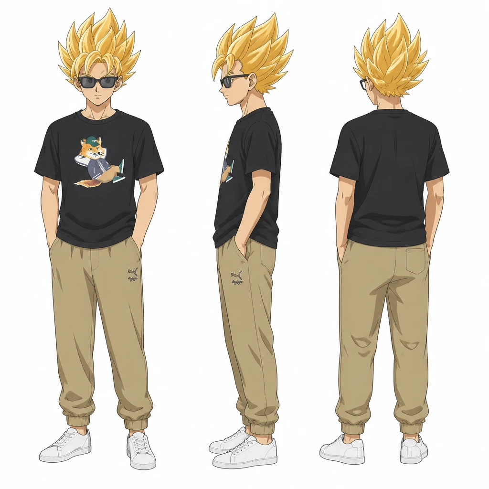
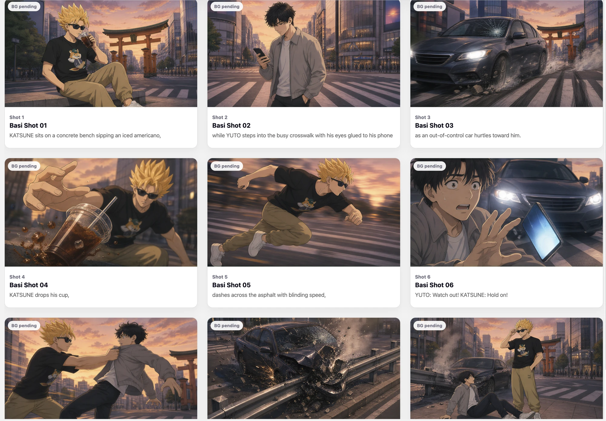
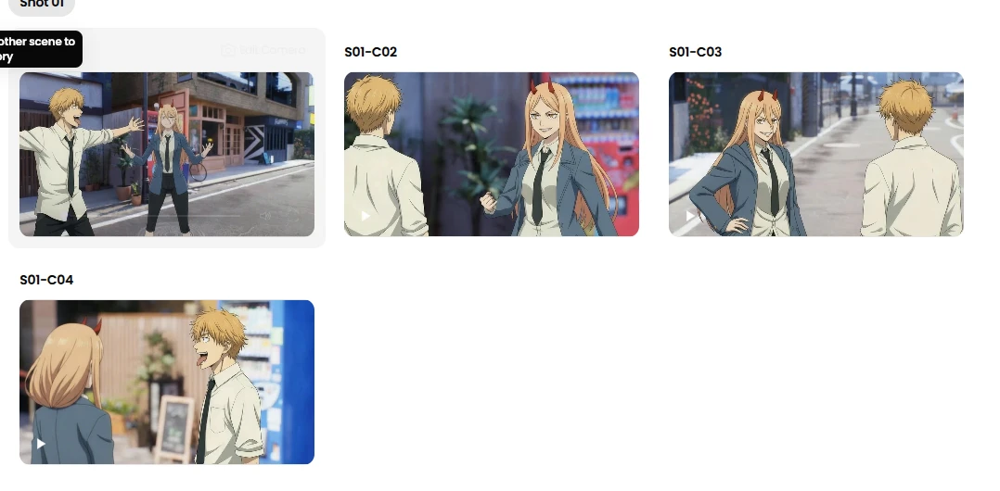
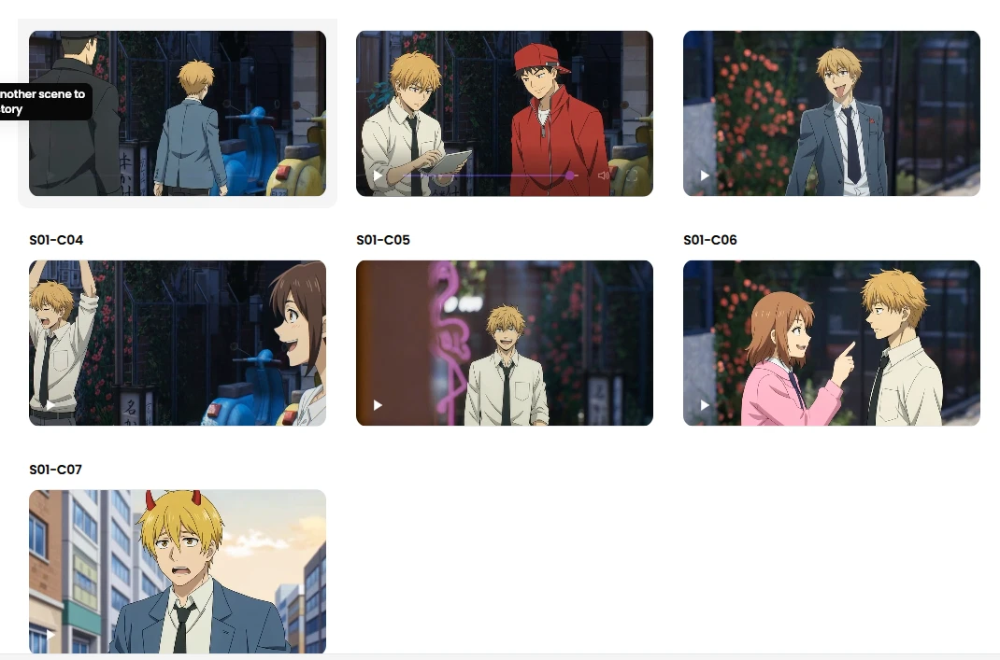

계획 공유 · 선택 렌더링
Lazy Storyboard V2에서 계획을 공유하고 렌더링을 분리하는 명세와 연동 방향을 정리했습니다. 영상 생성 자체가 이 단계에서 처음 추가된 것은 아닙니다.
A2P / RESEARCH & DEVELOPMENT
생성할 수 있는가에서, 원하는 장면을 만들 수 있는가로.
AI Lab의 실험과 개발이 제작 경험으로 이어진 과정을
살펴봅니다.
스토리보드에서 사건과 연출 정보가 축약되는 원인을 분석하고, 이야기 계획과 이미지·영상 렌더링을 분리하는 구조를 정리했습니다.
같은 이야기 계획으로 결과를 비교하고, 필요한 부분만 제작하며 사용자의 스타일을 반복 적용하는 경험을 목표로 했습니다.
Lazy Storyboard V2에서 계획을 공유하고 렌더링을 분리하는 명세와 연동 방향을 정리했습니다. 영상 생성 자체가 이 단계에서 처음 추가된 것은 아닙니다.
사용자 설명을 생성 단계별 프롬프트로 변환해 등록하고, 발급된 스타일 ID로 재사용하는 구조를 정리했습니다.
두 테스트에서 고정된 9샷 제한과 씬별 균등 배분이 내용 축약의 핵심 원인임을 확인했습니다. 컷이 많은 클라이맥스도 동일한 샷 예산을 받으며 연출 정보가 소실됐습니다.
이 단계는 설계·명세·연동 기록 중심입니다. 비용 절감, 사용자 만족도, 이야기 보존율의 개선 수치는 없으며 계획 기반 구조가 축약 문제를 해결했다고 단정할 수 없습니다.
같은 이야기 계획을 바탕으로 생성 결과를 비교하고, 선택적으로 수정·제작하는 방향으로 이어집니다.
이미지를 편집 가능한 3D 장면으로 복원하고, PoseShot과 3D Proxy에서 조정한 포즈·물체·카메라를 이미지와 영상 생성에 활용했습니다.
실제 개발 기록에 담긴 기능별 시연입니다.
상체·하체 등 원하는 범위를 선택해 포즈를 적용합니다.
손 포즈를 직접 편집해 장면에 필요한 표현을 만듭니다.
저장한 프레임을 바탕으로 카메라 이동과 포즈 변화를 녹화합니다.
서로 다른 포즈 사이의 변화를 보간합니다.
프롬프트로 설명하기 어려운 구도와 자세를 시각적으로 지정하고, 복원 결과를 직접 보정하며 원하는 장면에 접근하는 경험을 목표로 했습니다.
기본 도형, 이동·회전·크기 조절, 손·부분 포즈 편집, 복사·붙여넣기와 수동 인물 검출을 추가했습니다. 카메라 경로 녹화와 포즈 보간으로 확장했습니다.
인물·카메라·물체 복원과 정렬 방식을 개선하고, 복원 스트리밍과 렌더링 성능을 각각 검증했습니다.
첫 객체 응답 / 전체 완료 시간 평균 단축
정상 완료 이미지 4개 · 객체 최대 4개 조건의 복원 스트리밍 실험FPS 중앙값
동일 장면을 3회 측정한 별도 렌더링 실험사용자 테스트에서 텍스트 지시보다 직관적인 구도 편집 경험을 확인했습니다. 이는 정성 평가이며, 만족도나 사용성 개선율을 측정한 결과는 아닙니다.
가려진 영역, 복잡한 상호작용과 큰 시점 변경은 불안정했습니다. 복원 오류가 생성 결과에도 영향을 주기 때문에 수동 보정이 필요했습니다.
완벽한 복원만을 목표로 하기보다, 사용자가 보정하고 반복 제작할 수 있는 흐름에 무게를 두었습니다.
대본에서 캐릭터·장소·소품을 구성하고, 레퍼런스와 3D 프리비즈를 연결해 각 샷에 필요한 정보를 전달했습니다.
각 이미지에 역할을 지정해 캐릭터를 생성하고, 장소와 함께 스토리보드에 활용했습니다.


원하는 외형과 공간 구도를 여러 장면에 반영하고, 준비한 에셋을 반복해서 활용할 수 있도록 했습니다.
얼굴·상의·하의·헤어 레퍼런스를 조합한 캐릭터 생성, 장소와 오브젝트 결합, 텍스트 기반 소품 생성부터 스토리보드 연결까지 확인했습니다.
인물 가시성을 생성에 반영하고, 생성된 배경 대신 기본 배경이 참조되던 오류를 수정했습니다. A포즈가 남는 원인을 분석하고 프롬프트를 개선했습니다.
캐릭터·소품 치환과 보유 3D 배경 활용 가능성을 확인했습니다. A포즈 문제는 검증 샷의 동일 입력 재생성에서 구도를 유지하며 해소했습니다.
3명 이상의 인물 식별, 배경 세부 일관성, 복잡한 상호작용과 바닥·의자 접촉은 불안정했습니다. 프롬프트 개선이 상류의 모션 적용 문제까지 해결한 것은 아닙니다.
참조 정보를 더 잘 전달하는 것과 함께, 사용자가 장면 자체를 직접 조절할 수 있는 편집 수단을 탐색했습니다.
캐릭터·배경·모션·음성처럼 영상에 필요한 요소를 AI로 만들고, 하나의 제작 흐름으로 연결할 수 있는지 검증했습니다.
캐릭터 교체에서 영상화까지 검증한 실험의 샷 이미지입니다.


오류 실험에서는 캐릭터 혼동과 원하지 않은 인물의 등장이 기록됐습니다. 이미지는 해당 실험의 샷 모음이며, 각 샷의 오류를 개별 표시한 자료는 아닙니다.
반복되는 제작 작업을 줄이고, 준비한 캐릭터와 장면을 다른 콘텐츠에도 활용하는 경험을 목표로 했습니다.
배경 편집과 캐릭터 순차 교체를 실험하고, 이미지에서 영상으로 이어지는 제작 흐름을 검증했습니다.
대사에 맞는 모션·음성 생성과 스토리 기반 BGM을 실험했습니다.
더미 캐릭터 제거 기준 성공률
최종 무결점 클립 비율
동일한 108개 클립 검증에서 서로 다른 성공 기준으로 평가한 결과입니다.
108개 클립 검증에서 더미 캐릭터 제거 기준 성공률은 87%, 최종 영상의 무결점 성공률은 56.5%였습니다. 생성 자체가 가능하다는 것과 제작에 바로 쓸 수 있다는 것은 다른 기준이었습니다.
인물 겹침, 신체 비율과 포즈 재현, 여러 카메라 구도의 배경 일관성에 한계가 남았습니다. 영상에서 원하지 않은 인물이 등장하는 문제도 완전히 방지하지 못했습니다.
개별 생성 기능을 넘어, 같은 캐릭터와 공간을 여러 샷에 전달하는 제작 흐름으로 연구를 확장했습니다.
FROM RESEARCH TO CREATION
생성 가능성을 검증하고, 한계를 분석하고, 직접 편집하는 수단을 더했습니다.
A2P의 기록은 더 잘 생성하는
기술과 더 잘 만들 수 있는 도구를 함께 탐색한 과정입니다.